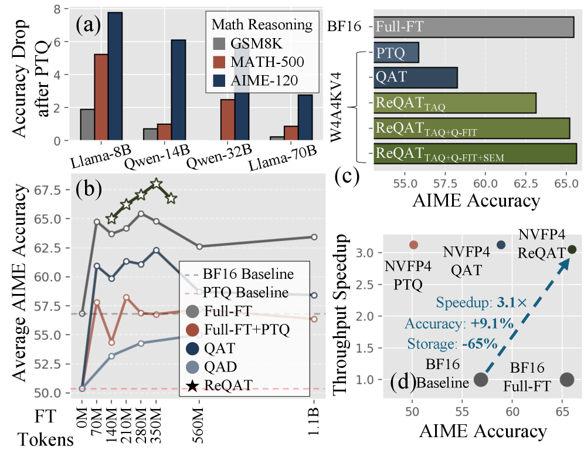

Why it matters왜 중요한가
FP4 fails not uniformly, but precisely where reasoning is most fragile: the digits and operators a proof depends on.
FP4의 실패는 골고루 일어나지 않는다 — 추론이 가장 취약한 지점, 즉 증명이 의존하는 숫자와 연산자에서 집중적으로 터진다.
Large Reasoning Models lean on long chain-of-thought, but full-precision inference is expensive and the KV cache balloons. Microscaled FP4 formats (MXFP4, NVFP4) promise cheap deployment, yet quantizing everything — weights, activations, and the KV cache (W4A4KV4) — collapses reasoning accuracy in ways existing PTQ and QAT cannot recover. The authors trace the cause: low-entropy tokens — precise symbolic commitments like digits and operators — are where quantization noise inflates sampling errors that then cascade through the entire reasoning trace. Treating compression as a reasoning problem, not a generic accuracy problem, is the key reframing.
대형 추론 모델(LRM)은 긴 사고연쇄에 의존하지만, 풀프리시전 추론은 비싸고 KV 캐시는 급격히 커진다. 마이크로스케일 FP4 포맷(MXFP4, NVFP4)은 저렴한 배포를 약속하지만, 가중치·활성값·KV 캐시를 전부(W4A4KV4) 양자화하면 추론 정확도가 무너지고 기존 PTQ·QAT로는 회복되지 않는다. 저자들은 원인을 저엔트로피 토큰 — 숫자·연산자처럼 정밀한 상징적 결정 — 에서 찾는다. 바로 이곳에서 양자화 잡음이 샘플링 오류를 키우고, 그 오류가 추론 흐름 전체로 연쇄 증폭된다. 압축을 일반 정확도 문제가 아니라 '추론 문제'로 재정의한 것이 핵심 전환이다.

By the numbers핵심 숫자
cache, all FP4가중치+활성값+KV 캐시
전부 FP4
(vs BF16 baseline 56.83%)AIME 정확도
(BF16 베이스라인 56.83% 대비)
BF16 baselineBF16 베이스라인 대비
AIME 향상폭
on DGX Spark처리량 가속
(DGX Spark)
on B200처리량 가속
(B200)
storage reduction추론 메모리
저장 절감
Results — FP4 surpasses BF16 fine-tuning결과 — FP4가 BF16 미세조정을 능가한다
| Setting | BF16 FT | QAT | ReQAT | Δ |
|---|---|---|---|---|
| MXFP4 W4A16 | 65.46 | 62.29 | 68.02 | +2.56 |
| MXFP4 W4A4 | 65.46 | 58.03 | 65.94 | +0.48 |
| NVFP4 W4A4KV4 | 65.46 | 58.86 | 65.94 | +0.48 |
| BF16 baseline | 56.83 | — | — | — |
| Benchmark | Direct PTQ | ReQAT | Δ |
|---|---|---|---|
| GSM8K | 86.45 | 89.85 | +3.40 |
| MATH-500 | 84.62 | 90.53 | +5.91 |
| AIME-120 | 23.13 | 41.85 | +18.72 |
In one diagram한 장의 그림
Idea: train for the tokens FP4 breaks아이디어: FP4가 부수는 토큰을 위해 학습한다
Trace-Aligned QAT (TAQ)
Instead of fine-tuning on arbitrary data, TAQ revisits identical reasoning traces and focuses gradient updates on the critical low-entropy decisions — the digits and operators — where FP4 quantization noise does the most damage to the chain of thought.
임의의 데이터로 미세조정하지 않고, TAQ는 동일한 추론 추적(trace)을 다시 방문해 FP4 양자화 잡음이 사고연쇄에 가장 큰 해를 끼치는 핵심 저엔트로피 결정(숫자·연산자)에 그래디언트 업데이트를 집중한다.
SEM + Q-FIT
Selective Entropy Minimization (SEM) reinforces confidence specifically at low-entropy positions (soft, not a hard mask). Q-FIT is a quantization-friendly initialization that jointly calibrates RoPE-consistent KV-cache transformations so QAT starts stable rather than fighting a broken cache.
선택적 엔트로피 최소화(SEM)는 저엔트로피 위치에서만 신뢰도를 강화한다(하드 마스크가 아닌 소프트 방식). Q-FIT는 RoPE 일관 KV 캐시 변환을 함께 보정하는 양자화 친화 초기화로, QAT가 망가진 캐시와 싸우는 대신 안정적으로 출발하게 한다.
How it works어떻게 작동하나
- Diagnose the failure실패 진단Show that FP4 W4A4KV4 errors concentrate on low-entropy tokens; injecting noise there (not at high-entropy positions) is what tanks AIME accuracy.FP4 W4A4KV4 오류가 저엔트로피 토큰에 집중됨을 보이고, 고엔트로피가 아닌 그곳에 잡음을 주입할 때 AIME 정확도가 무너짐을 확인한다.
- Q-FIT initializationQ-FIT 초기화Calibrate RoPE-consistent KV-cache transformations so the quantized cache is well-conditioned before QAT begins, stabilizing training.QAT 시작 전 RoPE 일관 KV 캐시 변환을 보정해 양자화된 캐시를 잘 조건화하고 학습을 안정화한다.
- Trace-aligned QAT추적 정렬 QATRun a fixed 70M-token QAT stage that revisits identical reasoning traces, concentrating updates on the critical low-entropy decisions — under the same total budget as the baselines.동일 추론 추적을 다시 방문하는 70M 토큰 QAT 단계를 베이스라인과 같은 총 예산 안에서 실행, 핵심 저엔트로피 결정에 업데이트를 집중한다.
- Reinforce with SEMSEM으로 강화Apply selective entropy minimization at low-entropy positions — most effective on the hardest benchmark (AIME 40.32 → 41.85 on R1-Llama-8B).저엔트로피 위치에 선택적 엔트로피 최소화를 적용 — 가장 어려운 벤치마크에서 효과 최대(R1-Llama-8B AIME 40.32 → 41.85).
What to take away그래서, 가져갈 것
4-bit everywhere is viable. Quantizing weights, activations and the KV cache to FP4 no longer means sacrificing reasoning — ReQAT matches or beats BF16 fine-tuning at up to 3.9× throughput.
전부 4비트가 실현 가능. 가중치·활성값·KV 캐시까지 FP4로 양자화해도 추론을 포기할 필요가 없다 — ReQAT는 최대 3.9배 처리량에서 BF16 미세조정을 동등·능가한다.
Entropy is the right lens. The failure isn't average error — it's a few precise, low-entropy tokens whose corruption cascades. Targeting them changes everything.
엔트로피가 올바른 렌즈. 실패는 평균 오류가 아니라, 부패가 연쇄되는 소수의 정밀한 저엔트로피 토큰에 있다. 그곳을 겨냥하는 것이 판도를 바꾼다.
Don't forget the KV cache. Q-FIT's RoPE-consistent KV transform shows the cache is a first-class quantization target, not an afterthought.
KV 캐시를 잊지 말 것. Q-FIT의 RoPE 일관 KV 변환은 캐시가 부차적 대상이 아니라 일급 양자화 대상임을 보여준다.
Hardware-real. Speedups are measured on shipping Blackwell silicon (DGX Spark, B200) with trtllm-bench — not a theoretical FLOP count.
하드웨어 실측. 가속은 출시된 Blackwell 실리콘(DGX Spark, B200)에서 trtllm-bench로 측정 — 이론적 FLOP 계산이 아니다.